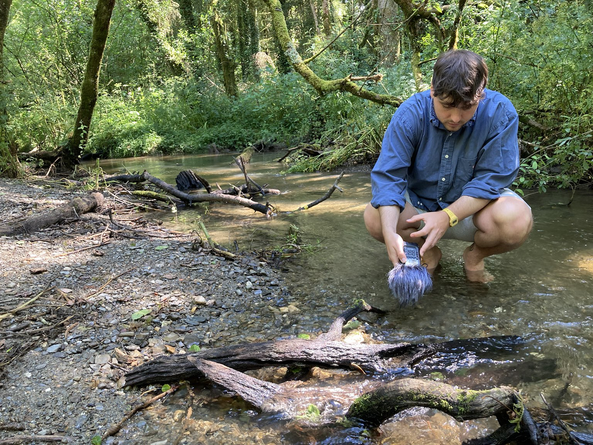

Gary-Martin | Systems Creative

twitter | blog | arena | contact
I'm a music maker, technologist, and pedagogical problem-solver. I help grow ideas into new tools and experiences for curious people.
I'm the founder of Third Nature Recordings, a Creative Producer with my pyka clan, and Lecturer of Music at UoG.